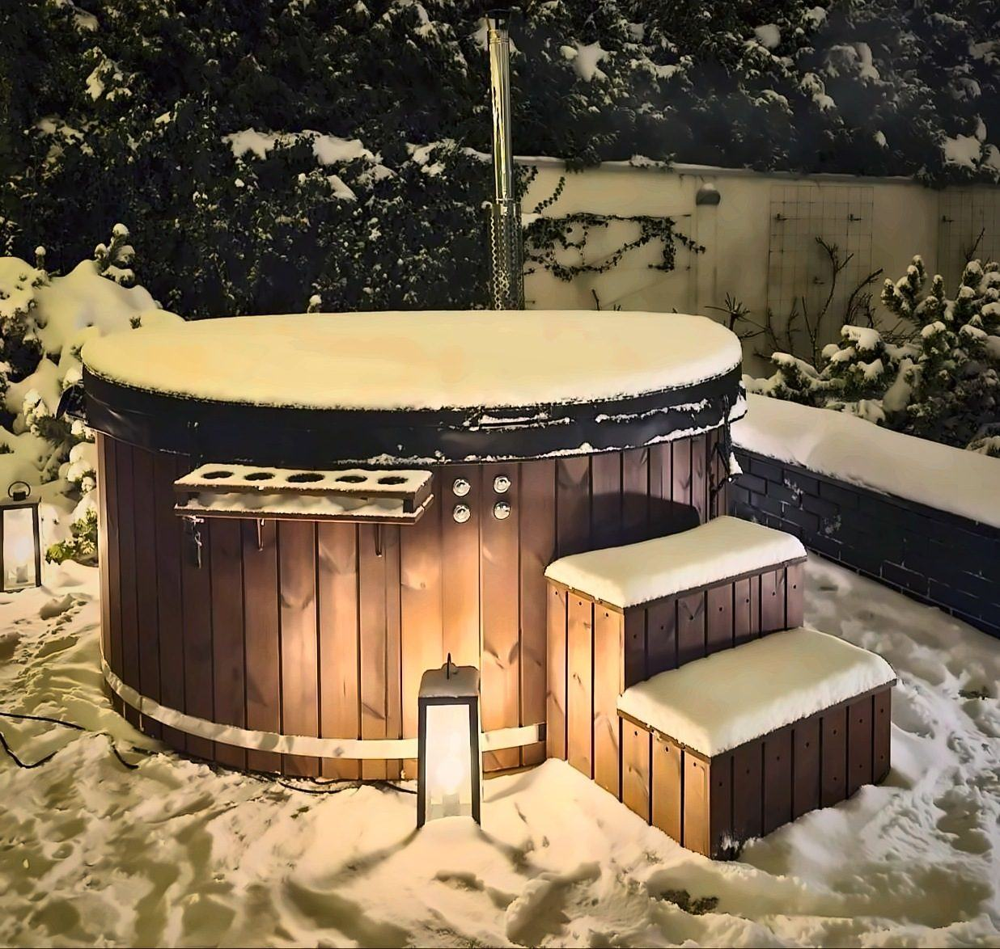

Stand: 10. November 2026

Heißes Wasser, kalte Luft und Schnee auf den Bäumen: Viele unserer Kunden nutzen ihr Badefass im Winter sogar häufiger als im Sommer. Damit das Baden bei Frost entspannt bleibt und das Badefass keinen Schaden nimmt, gibt es ein paar Dinge zu beachten. Hier fassen wir sie zusammen.
Aufheizen bei Kälte
Im Winter ist das Wasser kälter, und Luft und Wind entziehen dem Badefass mehr Wärme. Das Aufheizen dauert deshalb länger als im Sommer. Unsere Richtwerte für die Aufheizzeit hängen ausdrücklich von der Ausgangstemperatur des Wassers, vom Wetter, vom Wind und davon ab, ob die Abdeckung geschlossen bleibt.
So geht es schneller und sparsamer:
- Abdeckung zu: Lassen Sie die Thermoabdeckung beim Heizen immer geschlossen.
- Trockenes Brennholz: Feuchtes Holz gibt weniger Wärme und mehr Ruß.
- Passende Ofenleistung: Für das große Badefass oder häufige Nutzung bei Kälte empfehlen wir den Ofen mit 30 kW.
- Windgeschützter Platz: Ein geschützter, idealerweise überdachter Aufstellort hilft auch beim Heizen.
- Elektroheizung als Ergänzung: Eine 3-kW-Elektroheizung kann das Wasser zwischen den Bädern warm halten. Sie heizt langsam – wenn das Wasser schnell heiß sein soll, zünden Sie den Ofen an.
Wichtig: Füllen Sie das Badefass immer mit Wasser, bevor Sie das Feuer anzünden, und heizen Sie nie, wenn der Wasserstand unter dem Minimum liegt.
Die Thermoabdeckung: im Winter unverzichtbar
Die isolierte Thermoabdeckung hält die Wärme im Wasser, verkürzt die Aufheizzeit und spart Brennholz. Im Winter ist sie besonders wichtig:
- Lassen Sie die Abdeckung geschlossen, wenn das Badefass nicht genutzt wird, und immer, während der Ofen heizt.
- Räumen Sie Schnee von der Abdeckung, damit sie nicht überlastet wird und bricht.
- Setzen oder stellen Sie sich nicht auf die Abdeckung, und halten Sie Kinder und Haustiere davon fern.
- Wischen Sie die Unterseite ab und zu trocken.
Sicher baden bei Frost
Die übliche Badetemperatur liegt bei 36–40 °C. Bei höheren Temperaturen sollten Sie nur kurz baden. Das integrierte Thermometer zeigt Ihnen die Temperatur, bevor Sie einsteigen – am Ofen ist das Wasser wärmer, rühren Sie es deshalb um, bevor Sie sich auf die Anzeige verlassen.
Achten Sie im Winter besonders auf die Treppe: Nasses Holz, Schnee und Eis können rutschig sein. Halten Sie die Stufen frei und sicher. Lassen Sie einen brennenden Ofen nie unbeaufsichtigt, halten Sie Kinder von heißen Flächen fern und benutzen Sie das Schornsteinrohr nicht als Griff – es bleibt lange heiß, auch wenn das Feuer schon aus ist.
Ausstattung, die sich im Winter lohnt
Einige Extras machen das Baden in der kalten Jahreszeit deutlich angenehmer:
- Thermoabdeckung: Sie ist die wichtigste Ausstattung für den Winter – sie verringert Wärmeverluste, verkürzt die Aufheizzeit und spart Brennholz.
- Ofen mit Sichtfenster: Sie sehen das Feuer und können es besser regulieren. Für das große Badefass und häufige Nutzung bei Kälte empfehlen wir 30 kW.
- WLAN-Steuerung mit Elektroheizung: Zusammen mit der 3-kW-Elektroheizung können Sie die Heizung einschalten, bevor Sie nach Hause kommen. Die Fernsteuerung dient nur dem Komfort: Zünden Sie den Ofen nie an und lassen Sie das Badefass nie heizen, ohne dass jemand in der Nähe ist.
- LED-Beleuchtung: An dunklen Winterabenden sorgt sie für Atmosphäre und macht Treppe und Umgebung besser sichtbar.
- Schornsteinschutz: Er hält Hände und Kleidung vom heißen Rohr fern – besonders praktisch, wenn man im Winter in dicker Kleidung um das Badefass geht.
- Luftmassage: Luft kühlt das Wasser schneller ab. Legen Sie die Thermoabdeckung auf, wenn die Luftmassage nicht läuft.
Frost: die größte Gefahr für das Badefass
Gefriert Wasser in der Wanne oder in den Leitungen, kann es Innenwanne und Technik beschädigen. Frostschäden gelten nicht als Mangel – Vorsorge lohnt sich also doppelt.
- Wird das Badefass im Winter nicht beheizt, entleeren Sie Badefass und Filteranlage vollständig.
- Lassen Sie das Wasser erst ab, wenn der Ofen vollständig abgekühlt ist.
- Entleeren Sie Hydromassage- und Luftsystem gemäß Bedienungsanleitung.
Winterpause: das Badefass richtig einwintern
Wenn Sie das Badefass einige Wochen nicht nutzen, bereiten Sie es so auf die Pause vor:
- Ofen auskühlen lassen und die Asche entfernen.
- Badefass und Filteranlage vollständig entleeren.
- Hydromassage- und Luftsystem gemäß Bedienungsanleitung entleeren.
- Innenwanne mit einem weichen Tuch und einem milden Reiniger säubern und trocknen lassen.
- Ofen trocknen lassen, damit er nicht rostet.
- Thermoabdeckung schließen und Schnee regelmäßig abräumen.
- Kopfstützen abnehmen und drinnen lagern.
Holz und Witterung im Winter
Holz ist ein Naturmaterial. Schnee, Regen und Feuchtigkeit können die Holzverkleidung quellen, schwinden oder sich verziehen lassen. Wir empfehlen deshalb einen gut belüfteten, möglichst überdachten Aufstellort und ein Fundament, das das Badefass vom Boden abhebt, sodass der Unterbau keinen direkten Kontakt mit Erde, Feuchtigkeit oder Schnee hat. Mehr dazu im Ratgeber Welches Fundament braucht ein Badefass?
Behandeln Sie die Holzverkleidung vor dem Winter mit Öl oder einem Imprägniermittel – Tipps dazu finden Sie unter Badefass richtig pflegen und reinigen.
Häufige Fragen
Kann ich mein Badefass im Winter nutzen?
Ja. Wichtig sind eine geschlossene Thermoabdeckung beim Heizen, trockenes Brennholz und Schutz vor Frost, wenn das Badefass nicht beheizt wird.
Dauert das Aufheizen im Winter länger?
Ja. Die Aufheizzeit hängt von der Ausgangstemperatur des Wassers, vom Wetter, vom Wind und von der Abdeckung ab. Bei Kälte dauert es länger als im Sommer.
Muss ich das Wasser im Winter ablassen?
Wenn das Badefass im Winter nicht beheizt wird, ja: Entleeren Sie Badefass und Filteranlage, um Frostschäden zu vermeiden. Lassen Sie das Wasser erst ab, wenn der Ofen abgekühlt ist.
Welche Ofenleistung ist für den Winter besser?
Für das große Badefass oder häufige Nutzung bei Kälte empfehlen wir den Ofen mit 30 kW.
Was mache ich mit Schnee auf der Abdeckung?
Räumen Sie ihn ab. So wird die Thermoabdeckung nicht überlastet und kann nicht brechen.